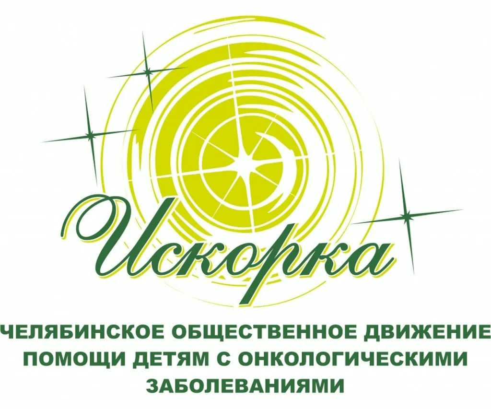

Сейчас «Искорка» реализует социальные проекты, направленных не только на лечение и реабилитацию детей, но и на профилактику онкозаболеваний. Движение расширило свою аудиторию, продлив патронаж молодёжи, переходящий из детского отделения во взрослое
Фонд "Искорка"